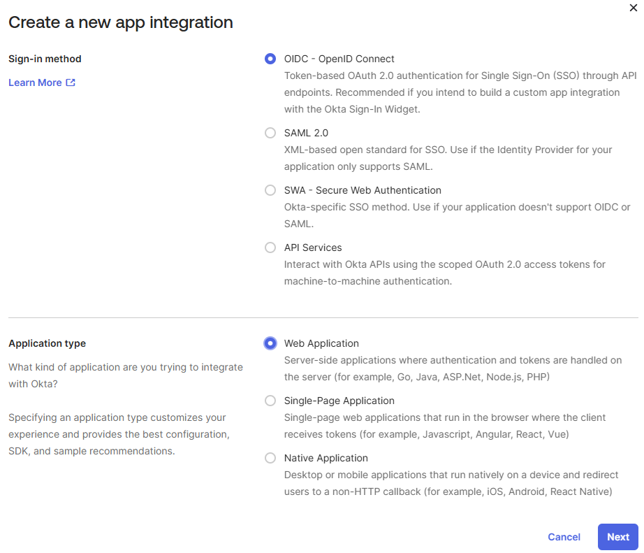
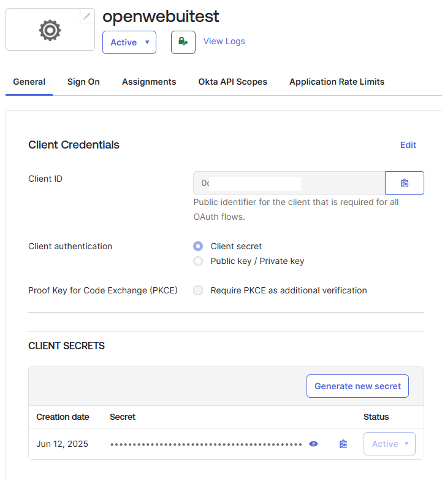

This tutorial is a community contribution and is not supported by the Open WebUI team. It serves only as a demonstration on how to customize Open WebUI for your specific use case. Want to contribute? Check out the contributing tutorial.
🔗 Okta OIDC SSO Integration
Overview
This documentation page outlines the steps required to integrate Okta OIDC Single Sign-On (SSO) with Open WebUI. It also covers the optional features of managing Open WebUI user groups based on Okta group membership, including Just-in-Time (JIT) group creation. By following these steps, you will enable users to log in to Open WebUI using their Okta credentials. If you choose to enable group syncing (ENABLE_OAUTH_GROUP_MANAGEMENT), users will be automatically assigned to relevant groups within Open WebUI based on their Okta groups upon login. If you also enable JIT group creation (ENABLE_OAUTH_GROUP_CREATION), groups present in Okta claims but missing in Open WebUI will be created automatically during login.
Prerequisites
- A new or existing Open WebUI instance.
- An Okta account with administrative privileges to create and configure applications.
- Basic understanding of OIDC, Okta application configuration, and Open WebUI environment variables.
Setting up Okta
First, you need to configure an OIDC application within your Okta organization and set up a groups claim to pass group information to Open WebUI.
1. Create/Configure OIDC Application in Okta
-
Log in to your Okta Admin Console.
-
Navigate to Applications > Applications.
-
Either create a new OIDC - OpenID Connect application (choose Web Application as the type) or select an existing one you wish to use for Open WebUI.

-
During setup or in the application's General settings tab, configure the Sign-in redirect URIs. Add the URI for your Open WebUI instance, followed by
/oauth/oidc/callback. Example:https://your-open-webui.com/oauth/oidc/callback. -
Take note of the Client ID and Client secret provided on the application's General tab. You will need these for the Open WebUI configuration.

-
Ensure the correct users or groups are assigned to this application under the Assignments tab.
2. Add a Groups Claim to the ID Token
(Optional) To enable automatic group management in Open WebUI based on Okta groups, you need to configure Okta to send the user's group memberships in the ID token. If you only need SSO login and prefer to manage groups manually within Open WebUI, you can skip this section.
- In the Admin Console, go to Applications > Applications and select your OIDC client app.
- Go to the Sign On tab and click Edit in the OpenID Connect ID Token section.
- In the Group claim type section, select Filter.
- In the Group claims filter section:
- Enter
groupsas the claim name (or use the default if present). - Select Matches regex from the dropdown.
- Enter
.*in the regex field. This will include all groups the user is a member of. You can use a more specific regex if needed.
- Enter
- Click Save.
- Click the Back to applications link.
- From the More button dropdown menu for your application, click Refresh Application Data.
For more advanced group claim configurations, refer to the Okta documentation on customizing tokens and group functions.
3. Applying MFA (e.g., Google Authenticator)
To enhance security, you can enforce Multi-Factor Authentication (MFA) for users logging into Open WebUI via Okta. This example demonstrates how to set up Google Authenticator as an additional factor.
-
Configure an Authenticator:
- In the Okta Admin Console, navigate to Security > Authenticators.
- Click Add Authenticator and add Google Authenticator.
- During setup, you can set "User verification" to "Required" to enhance security.
-
Create and Apply a Sign-On Policy:
- Go to Security > Authenticators, then click the Sign On tab.
- Click Add a policy to create a new policy (e.g., "WebUI MFA Policy").
- In the policy you just created, click Add rule.
- Configure the rule:
- Set "IF User's IP is" to "Anywhere".
- Set "THEN Access is" to "Allowed after successful authentication".
- Under "AND User must authenticate with", select "Password + Another factor".
- Ensure your desired factor (e.g., Google Authenticator) is included under "AND Possession factor constraints are".
- Finally, assign this policy to your Open WebUI application. Go to Applications > Applications, select your OIDC app, and under the Sign On tab, select the policy you created.
Now, when users log in to Open WebUI, they will be required to provide their Okta password and an additional verification code from Google Authenticator.
Re-authentication Frequency By default, Okta's Sign-On Policy may not prompt for MFA on every login from the same device or browser to improve user experience. If you require MFA for every session, you can adjust this setting within the policy rule you created. Look for the "Prompt for re-authentication" setting and set it to "Every sign-in attempt".
Configuring Open WebUI
To enable Okta OIDC SSO in Open WebUI, you need to set the following core environment variables. Additional variables are required if you wish to enable the optional group management feature.
# --- OIDC Core Settings ---
# Enable OAuth signup if you want users to be able to create accounts via Okta
# ENABLE_OAUTH_SIGNUP="true"
# Your Okta application's Client ID
OAUTH_CLIENT_ID="YOUR_OKTA_CLIENT_ID"
# Your Okta application's Client Secret
OAUTH_CLIENT_SECRET="YOUR_OKTA_CLIENT_SECRET"
# Your Okta organization's OIDC discovery URL
# Format: https://<your-okta-domain>/.well-known/openid-configuration
# Or for a specific authorization server: https://<your-okta-domain>/oauth2/<auth-server-id>/.well-known/openid-configuration
OPENID_PROVIDER_URL="YOUR_OKTA_OIDC_DISCOVERY_URL"
# Name displayed on the login button (e.g., "Login with Okta")
OAUTH_PROVIDER_NAME="Okta"
# Scopes to request (default is usually sufficient)
# OAUTH_SCOPES="openid email profile groups" # Ensure 'groups' is included if not default
# --- OAuth Group Management (Optional) ---
# Set to "true" only if you configured the Groups Claim in Okta (Step 2)
# and want Open WebUI groups to be managed based on Okta groups upon login.
# This syncs existing groups. Users will be added/removed from Open WebUI groups
# to match their Okta group claims.
# ENABLE_OAUTH_GROUP_MANAGEMENT="true"
# Required only if ENABLE_OAUTH_GROUP_MANAGEMENT is true.
# The claim name in the ID token containing group information (must match Okta config)
# OAUTH_GROUP_CLAIM="groups"
# Optional: Enable Just-in-Time (JIT) creation of groups if they exist in Okta claims but not in Open WebUI.
# Requires ENABLE_OAUTH_GROUP_MANAGEMENT="true".
# If set to false (default), only existing groups will be synced.
# ENABLE_OAUTH_GROUP_CREATION="false"
Replace YOUR_OKTA_CLIENT_ID, YOUR_OKTA_CLIENT_SECRET, and YOUR_OKTA_OIDC_DISCOVERY_URL with the actual values from your Okta application configuration.
To enable group synchronization based on Okta claims, set ENABLE_OAUTH_GROUP_MANAGEMENT="true" and ensure OAUTH_GROUP_CLAIM matches the claim name configured in Okta (default is groups).
To also enable automatic Just-in-Time (JIT) creation of groups that exist in Okta but not yet in Open WebUI, set ENABLE_OAUTH_GROUP_CREATION="true". You can leave this as false if you only want to manage memberships for groups that already exist in Open WebUI.
Group Membership Management
When ENABLE_OAUTH_GROUP_MANAGEMENT is set to true, a user's group memberships in Open WebUI will be strictly synchronized with the groups received in their Okta claims upon each login. This means:
- Users will be added to Open WebUI groups that match their Okta claims.
- Users will be removed from any Open WebUI groups (including those manually created or assigned within Open WebUI) if those groups are not present in their Okta claims for that login session.
Ensure that all necessary groups are correctly configured and assigned within Okta and included in the group claim.
Session Persistence in Multi-Node Deployments
When deploying Open WebUI across multiple nodes (e.g., in a Kubernetes cluster or behind a load balancer), it is crucial to ensure session persistence for a seamless user experience, especially with SSO. Set the WEBUI_SECRET_KEY environment variable to the same secure, unique value on all Open WebUI instances.
# Example: Generate a strong secret key (e.g., using openssl rand -hex 32)
WEBUI_SECRET_KEY="YOUR_UNIQUE_AND_SECURE_SECRET_KEY"
If this key is not consistent across all nodes, users may be forced to log in again if their session is routed to a different node, as the session token signed by one node will not be valid on another. By default, the Docker image generates a random key on first start, which is unsuitable for multi-node setups.
Disabling the Standard Login Form
If you intend to only allow logins via Okta (and potentially other configured OAuth providers), you can disable the standard email/password login form by setting the following environment variable:
ENABLE_LOGIN_FORM="false"
Important Prerequisite
Setting ENABLE_LOGIN_FORM="false" requires ENABLE_OAUTH_SIGNUP="true" to be set as well. If you disable the login form without enabling OAuth signup, users (including administrators) will be unable to log in. Ensure at least one OAuth provider is configured and ENABLE_OAUTH_SIGNUP is enabled before disabling the standard login form.
Restart your Open WebUI instance after setting these environment variables.
Verification
- Navigate to your Open WebUI login page. You should see a button labeled "Login with Okta" (or whatever you set for
OAUTH_PROVIDER_NAME). - Click the button and authenticate through the Okta login flow.
- Upon successful authentication, you should be redirected back to Open WebUI and logged in.
- If
ENABLE_OAUTH_GROUP_MANAGEMENTis true, log in as a non-admin user. Their groups within Open WebUI should now strictly reflect their current group memberships in Okta (any memberships in groups not in the Okta claim will be removed). IfENABLE_OAUTH_GROUP_CREATIONis also true, any groups present in the user's Okta claims that did not previously exist in Open WebUI should now have been created automatically. Note that admin users' groups are not automatically updated via SSO. - Check the Open WebUI server logs for any OIDC or group-related errors if you encounter issues.
Troubleshooting
-
400 Bad Request/Redirect URI Mismatch: Double-check that the Sign-in redirect URI in your Okta application exactly matches
<your-open-webui-url>/oauth/oidc/callback. -
Groups Not Syncing: Verify that the
OAUTH_GROUP_CLAIMenvironment variable matches the claim name configured in the Okta ID Token settings. Ensure the user has logged out and back in after group changes - a login flow is required to update OIDC. Remember admin groups are not synced. -
Configuration Errors: Review the Open WebUI server logs for detailed error messages related to OIDC configuration.
-
Refer to the official Open WebUI SSO Documentation.
-
Consult the Okta Developer Documentation.